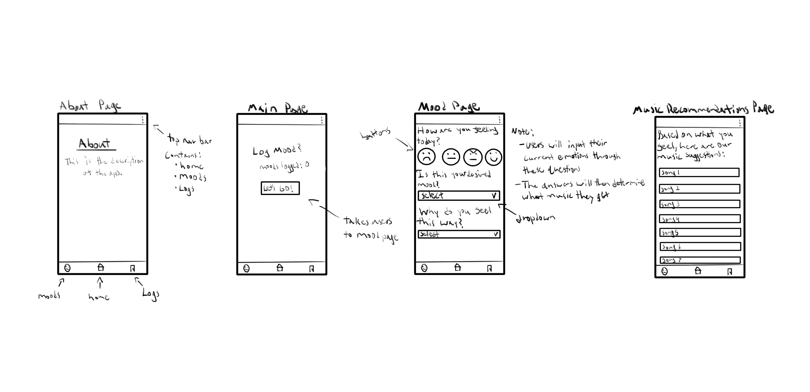
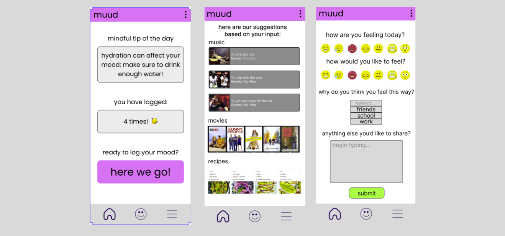
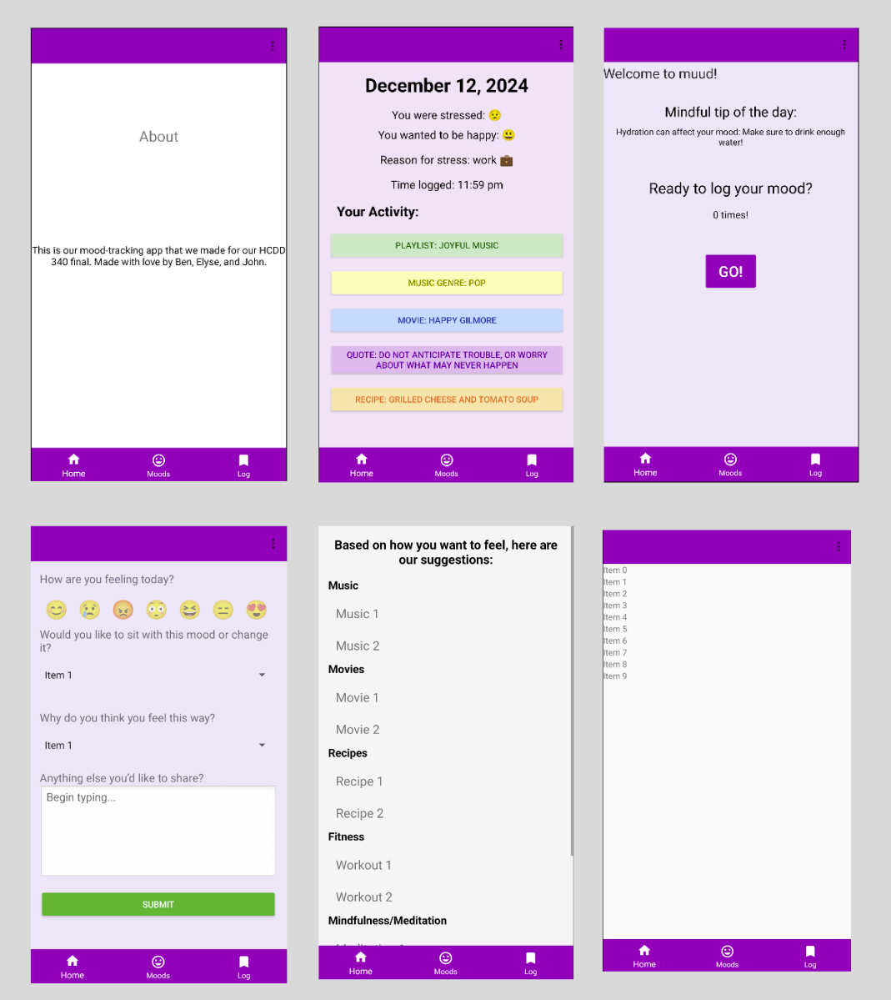

Java/XML Programmer and Designer for MUUD in HCCD 340
Human-Centered Design and Development 340, Penn State University
Project Overview
MUUD is an application made in Android Studio and programmed with XML and Java. My team was comprised of myself and two other programmers/designers. The idea of MUUD is for users to input their current mood into the application and their desired mood. The program then looks at this information and decides what kind of music or movies/shows the user watch to achieve the desired mood.
My Role on The Team and Tools Used
My role in this project was to both program and design. I primarily did the programming for the team, however, I did share my insights on the designs as they were relayed to me and I would offer my feedback. The tools used for this project were Figma and Android Studio. We very briefly made a visual mockup in Figma for what we wanted the application to look like and then implemented it into Android Studio using XML and Java.
Design Challenges
The primary challenge I was tasked with solving was making the application function without hiccups, ensuring usability was fluid and concise. I programmed the scene changes in the application and also added data retention. To my knowledge we were the only group in the class that had data retention. I wanted to add that not just for the extra credit but because the application would be very choppy if you inputted information and transitioned to a scene that didn’t match the data that you just inputted. This would confuse users and I wanted to avoid confusion as much as possible. There is a flaw, however, in regards to the recorded data that I will mention further below.
Production Process and Work Samples
Shown below in figure 1 is an image that in likeness to the drawn mockup that my teammates and I did when first starting out. I, unfortunately, do not have the original sheet of paper used. However, these are the exact screens that the team ideated in the beginning of the project. The four pages are the about page, main page, mood page, and recommendations page. We unfortunately did not have time to make a user flow diagram or do extensive research on the audience we were targeting so I have no such documentation.

Down below in figure 2 we have some old screenshots of the Figma wireframed screens. The screens shown were the main page, recommendations page, and mood log page. Unfortunately, I do not have the wireframe at this time due to being kicked from my school email account. Hopefully some time soon I will regain access and find that documentation. The orignal idea for the application was to have it recommend music playlists. Further down the line, however, the team added more to what the application would recommend for the users such as recipes and movies.

Final Design of MUUD
Key Notes:
- For the final design we went with a more blocky design for things like buttons
- The first menu you will see is a mindful tip of the day page (it’s the same one every time) and it will prompt you to click the “GO!” button to begin logging your activity
- Between the Figma mockup and the full prototype we decided to have a functioning log system that would contain the data you inputted
- This data was only partly retained as we did not have a system in place to have the app determine the type of music and other qualities it provides
- The user is able to click on the emojis, the dropdown menus, they can free type in the text box, and then submit their info
- When doing this, they will be able to then see their suggestion page (the recommendations do not change no matter what you put)
- In the Log page the user can see the data logged and it will take them to the date and time that they logged the info
- In the log page the page will live update to the data retained for the current emotion, desired emotion, and reason for stress
- It does not live update any other data
- NOTE: Some of the screenshots shown do not have the live use user interfaces in them as I was unable to run the code when cloning it
- This is likely to do with the system being run on a different version of Android Studio and also plugins that we had that I do not remember
